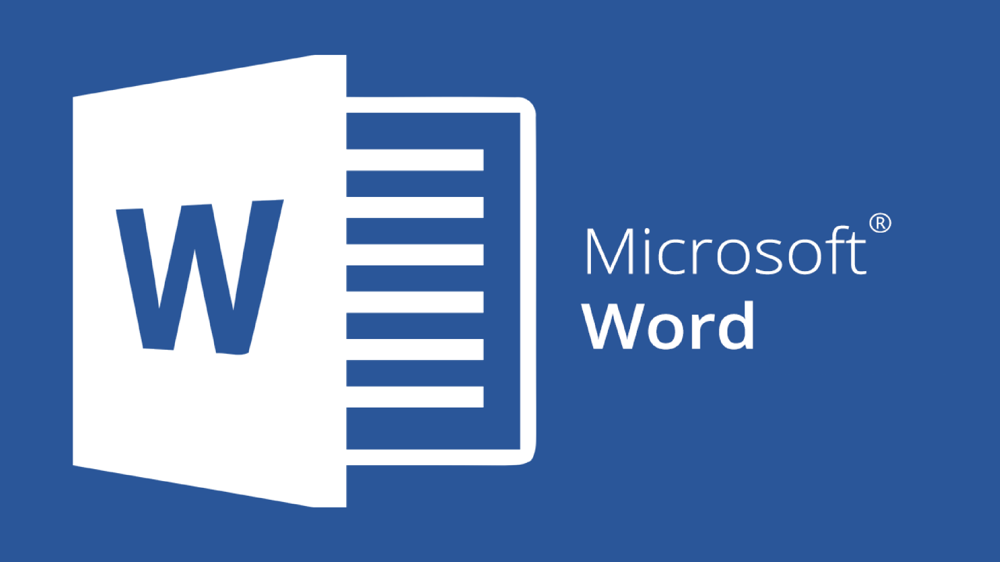
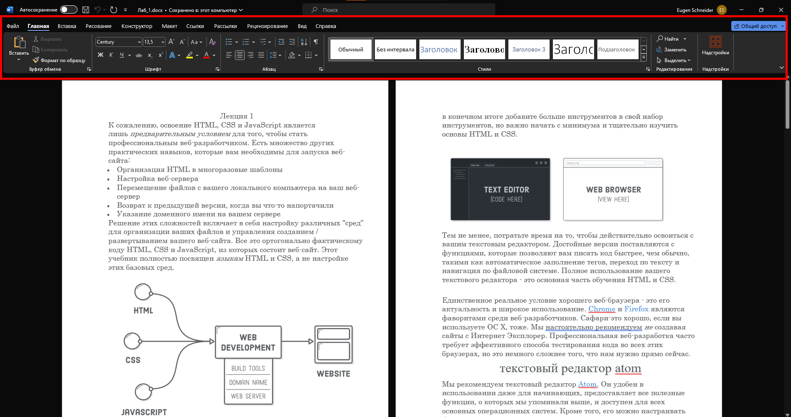
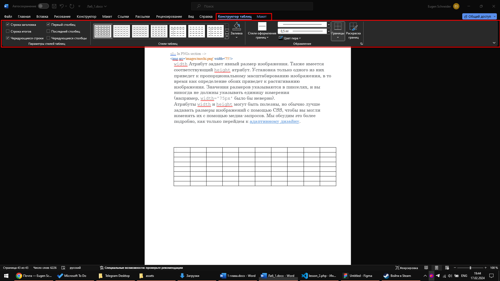
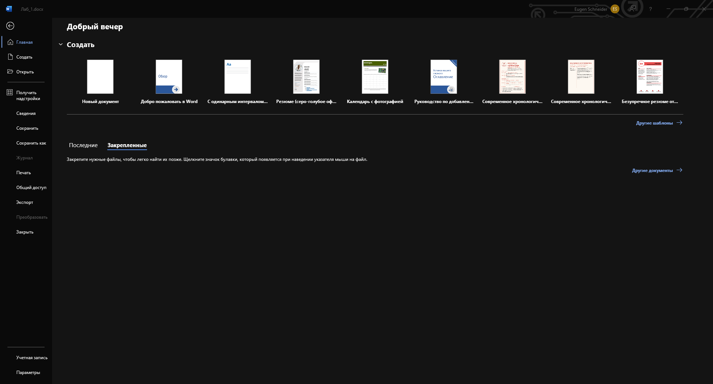
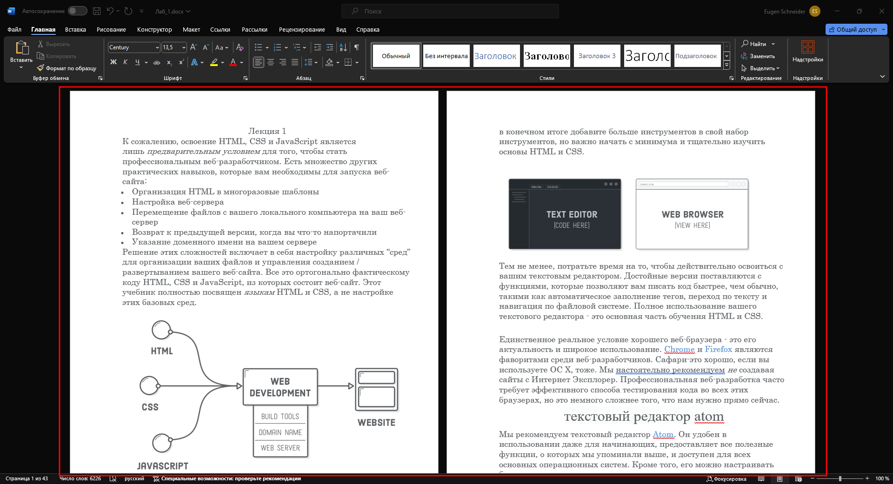
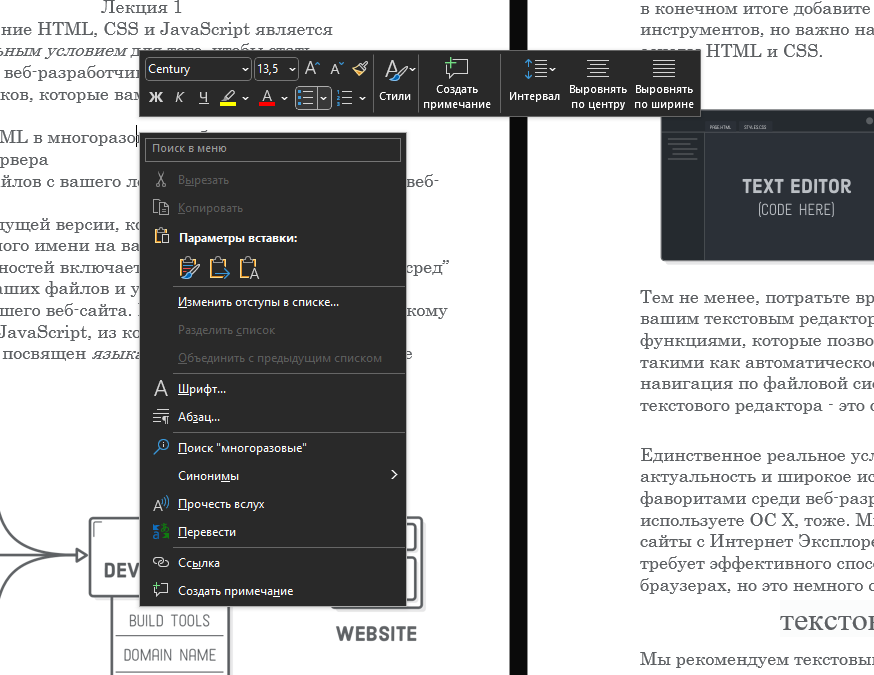
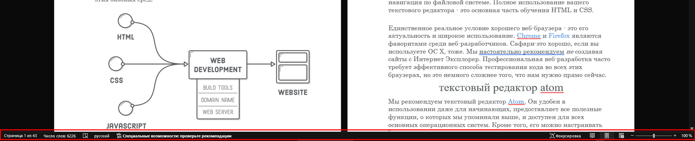
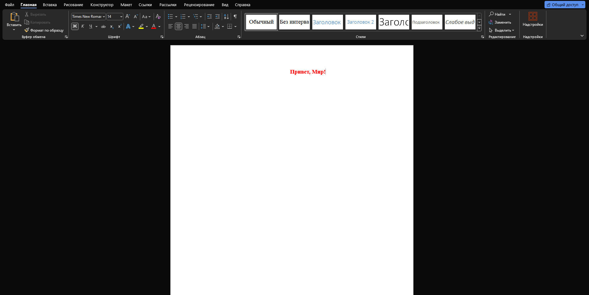

Microsoft Word – Текстровый процессор, предназначенный для работы над различными текстовыми документами. Первый выпуск программы состоялся в 1983 году. На момент создания этого учебника, самой последней версией MS Word является версия 2021 года, которая доступна на Windows, MacOs, Android, iOS, а также в виде веб-приложения из пакета Office Online. Для файлов документов MS Word использует расширение .doc и .docx.
Интерфейс всех программ из пакета MS Office очень похож, что делает переход от одной программе к другой более удобным. Основным элементов интерфейса является лента с набором инструментов. Инструменты в сгруппированы по типу назначения, а также размещены в соответствующие вкладки.
Для перехода к нужной вкладке достаточно щелкнуть по ее названию (имени). Каждая вкладка связана с видом выполняемого действия. Например, вкладка Главная, которая по умолчанию открывается после запуска во всех приложениях, содержит элементы, которые могут понадобиться на начальном этапе работы, когда необходимо набрать, отредактировать и отформатировать текст (ячейки, надписи слайдов и т.п.). Вкладка Разметка страницы предназначена для установки параметров страниц документов. Вкладка Вставка предназначена для вставки в документы различных объектов и так далее. Помимо постоянных, имеется целый ряд контекстно-зависимых вкладок, например, для работы с таблицами, рисунками, диаграммами и т.п., которые появляются автоматически при выделении объекта или установке на него курсора. Для некоторых объектов появляется сразу несколько вкладок, например, при работе с таблицами появляются вкладки Конструктор и Макет
Для открытия, создания, сохранения и других действий с файлом, необходимо нажать на вкладку "Файл", которая перенаправит вас на окно со всеми необходимыми функциями. Для возвращения назад нужно нажать на кнопку с изображением стрелки в круге, которая будет находиться там же, где была вкладка "Файл"
При открытии самой программы MS Word (а не документа), данное окно отображается в первую очередь.
Помимо ленты, в интерфейсе программы присутствует главная рабочая область, которая отображает открытый документ.
При нажатии на Правую кнопку мыши в главной рабочей области, откроется контекстное меню, которое содержит пункты для взаимодействия с выбранным фрагментом документа, а также дублирует некоторый функционал из главной вкладки ленты
Нижняя панель состояния показывает количество страниц и символов в документе, а также изменять формат просмотра документа и масштаб
Перейдем к небольшому практическому заданию. Создайте новый документ, и введите в нем "Привет, мир!". Во вкладке "Главная" в группе "Шрифт" установите следующие параметры: Шрифт - Times New Roman, Размер шрифта 14, Полужирный текст, Цвет текста - красный. В группе "Абзац" выберите Выравнивание по центру. Полученный результат:
Тест
Какой компонент интерфейса содержит большую часть команд?
На какой панели можно увидеть количество страниц в документе?
В какой вкладке можно изменить размер шрифта?
В каком случае вкладки для редактирования таблицы будут видны?
Какой формат используется для документов MS Word?